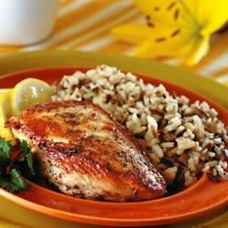

Simple Lemon Herb Chicken
This is a simple, quick and delicious dish. All you need are a few spices
and, of course, the chicken! The amount of spices are completely up to you. You
can add more or less according to your taste. Enjoy!
Ingredients
- 2 breast half, bone and skin removes (blank)s skinless, boneless chicken breast halves
- 1 Lemon
- salt and pepper to taste
- 1 tablespoon olive oil
- 1 pinch dried oregano
- 2 sprigs fresh parsley, for garnish
Steps
- Cut lemon in half, and squeeze juice from 1/2 lemon on chicken.
Season with salt to taste. Let sit while you heat oil in a small skillet over medium low heat.
- When oil is hot, put chicken in skillet. As you saute chicken, add juice from other 1/2 lemon, pepper to taste,
and aregano. Saute for 5 to 10 minutes each side, or until juice run clear. Serve with parsley for garnish.